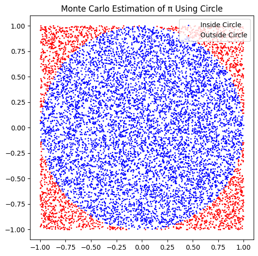
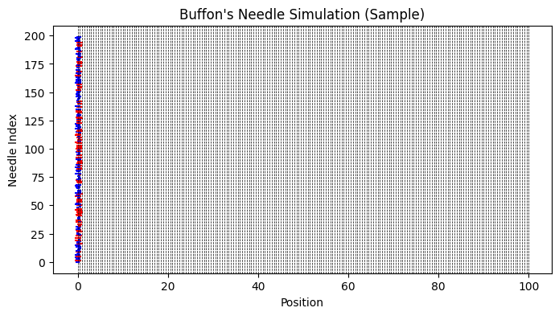

Problem 2
🌟 COMPLETE SOLUTION: ESTIMATING PI USING MONTE CARLO METHODS
✅ PART 1: ESTIMATING π USING A CIRCLE
1. THEORETICAL FOUNDATION
- Consider a unit circle (radius \(r=1\)) inscribed inside a square with side length 2.
- The area of the circle:
$$ A_{\text{circle}} = \pi r^2 = \pi $$ * The area of the square:
$$ A_{\text{square}} = (2r)^2 = 4 $$ * Probability \(P\) that a random point inside the square lies in the circle:
$$ P = \frac{A_{\text{circle}}}{A_{\text{square}}} = \frac{\pi}{4} $$ * Estimation formula for \(\pi\):
$$ \pi \approx 4 \times \frac{N_{\text{inside}}}{N_{\text{total}}} $$
2. SIMULATION
- Generate \(N\) random points uniformly inside the square \([-1,1] \times [-1,1]\).
- Count how many points fall inside the circle.
- Estimate \(\pi\) using the formula above.
import numpy as np
N = 10000
points = np.random.uniform(-1, 1, (N, 2))
distances = np.linalg.norm(points, axis=1)
inside_circle = distances <= 1
pi_estimate = 4 * np.sum(inside_circle) / N
print(f"Estimated π: {pi_estimate:.5f}")
3. VISUALIZATION
- Plot the points inside and outside the circle with different colors.
import matplotlib.pyplot as plt
plt.figure(figsize=(6,6))
plt.scatter(points[inside_circle,0], points[inside_circle,1], color='blue', s=1, label='Inside Circle')
plt.scatter(points[~inside_circle,0], points[~inside_circle,1], color='red', s=1, label='Outside Circle')
plt.legend()
plt.title("Monte Carlo Estimation of π Using Circle")
plt.gca().set_aspect('equal')
plt.show()

4. ANALYSIS
- As \(N\) increases, the estimate converges to the true value of \(\pi\).
- The error decreases roughly at a rate proportional to \(\frac{1}{\sqrt{N}}\) (statistical convergence).
- Computational time grows linearly with \(N\).
✅ PART 2: ESTIMATING π USING BUFFON’S NEEDLE
1. THEORETICAL FOUNDATION
- Needle of length \(l\) is dropped onto a plane with parallel lines spaced by distance \(d\), with \(l \leq d\).
- Probability \(P\) that the needle crosses a line:
$$ P = \frac{2l}{\pi d} $$ * If needle is dropped \(N\) times and crosses lines \(k\) times, estimate \(\pi\) as:
$$ \pi \approx \frac{2 l N}{d k} $$
2. SIMULATION
- Simulate random needle centers (distance to nearest line) and angles.
- Count how many crosses occur.
- Estimate \(\pi\) using the formula.
import numpy as np
N = 10000
l = 1.0
d = 1.0
centers = np.random.uniform(0, d/2, N)
angles = np.random.uniform(0, np.pi/2, N)
crosses = centers <= (l/2) * np.sin(angles)
k = np.sum(crosses)
pi_estimate = (2 * l * N) / (d * k)
print(f"Estimated π (Buffon's Needle): {pi_estimate:.5f}")
3. VISUALIZATION
- Plot sample needles and parallel lines, color code crossing needles.
import matplotlib.pyplot as plt
plt.figure(figsize=(8,4))
for i in range(200):
c = centers[i]
a = angles[i]
x1 = c - (l/2)*np.cos(a)
x2 = c + (l/2)*np.cos(a)
y = i
plt.plot([x1, x2], [y, y], 'b-' if crosses[i] else 'r-')
for line_pos in np.arange(0, d/2*201, d/2):
plt.axvline(line_pos, color='k', linestyle='--', linewidth=0.5)
plt.title("Buffon's Needle Simulation (Sample)")
plt.xlabel("Position")
plt.ylabel("Needle Index")
plt.show()

4. ANALYSIS
- Increasing \(N\) improves accuracy.
- Convergence is similar to circle method but often slower.
- Highlights geometric probability concepts.